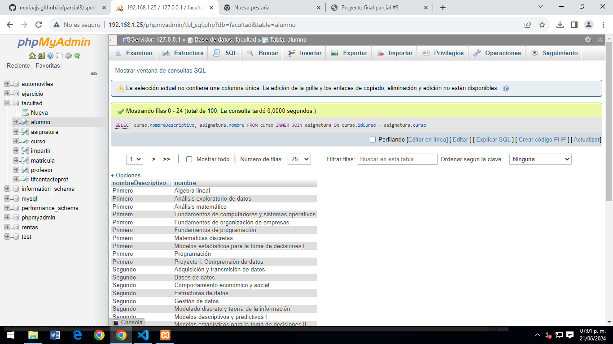
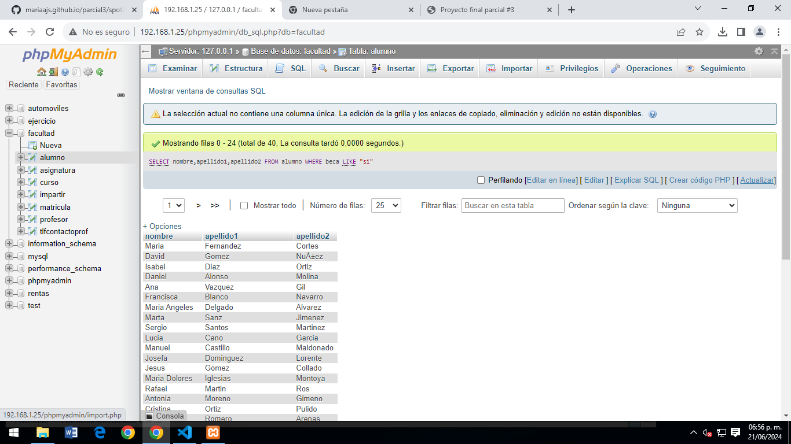
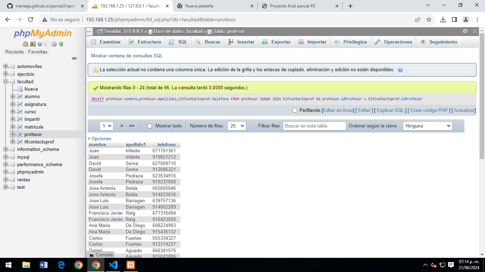
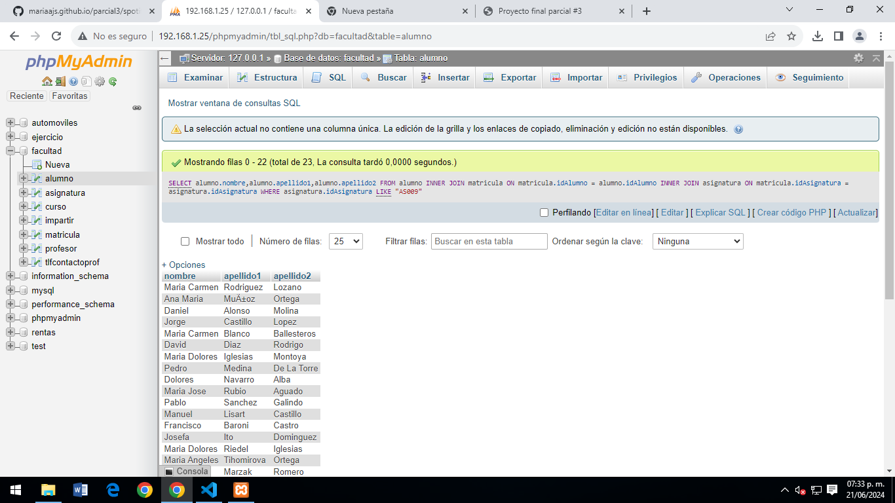
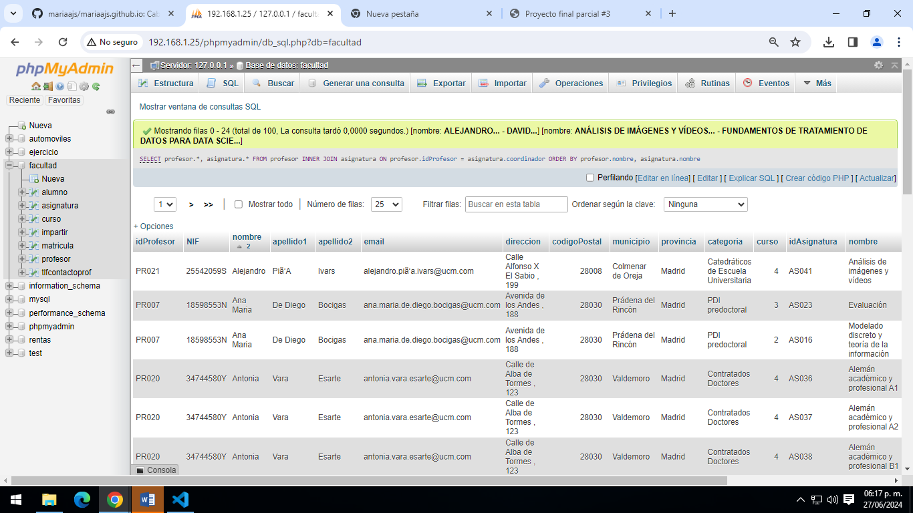
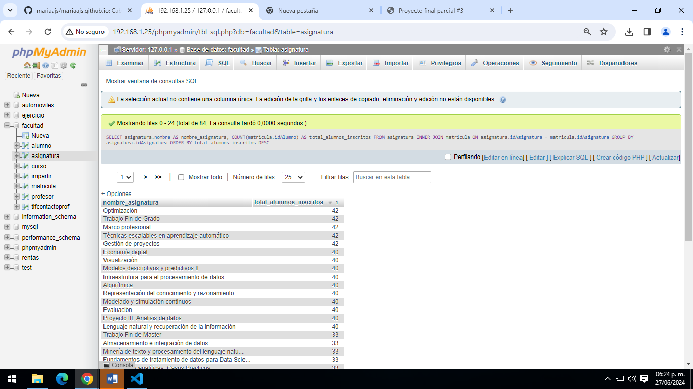
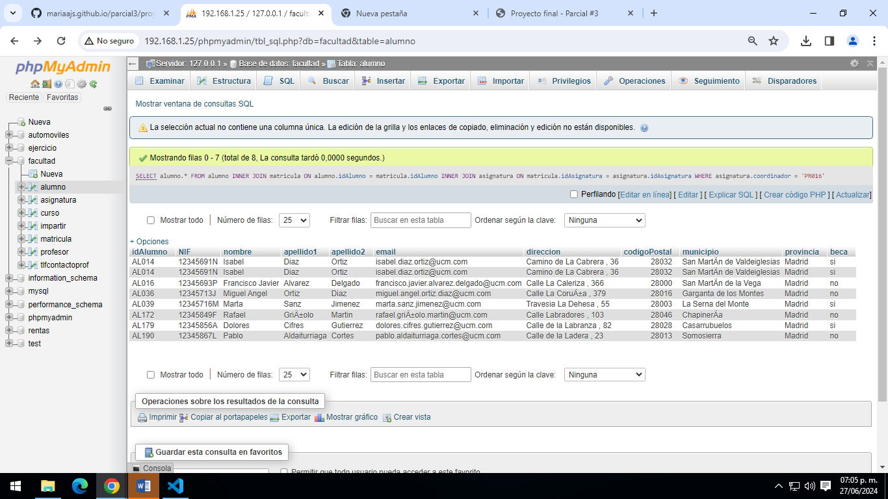
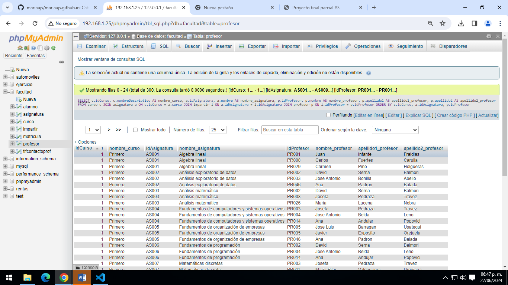
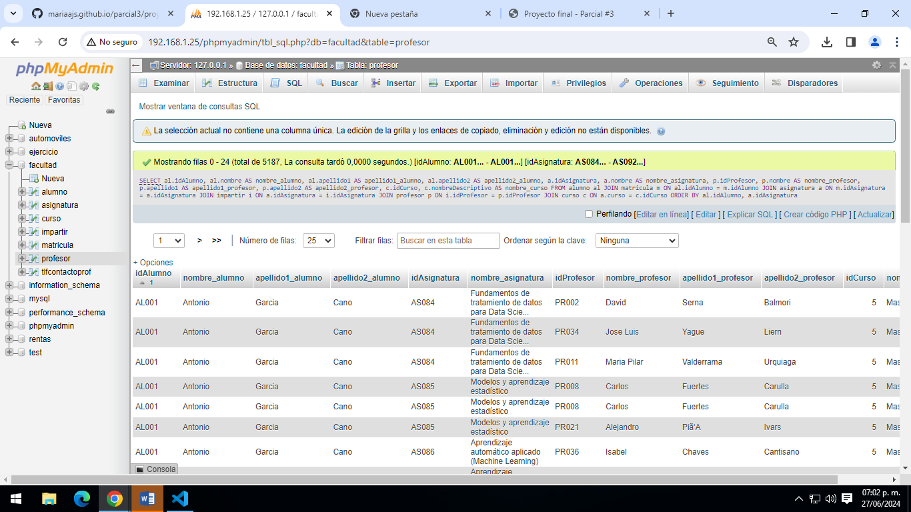

Proyecto final parcial 3
Ricardo Inzunza Mendivil 4AVP
1: SELECT * FROM alumno:
Obtener el listado de todos los alumnos de la Facultad.

Obtener el listado de todos los alumnos de la Facultad.
Obtener el listado de todos los nombres de los cursos y asignaturas que tiene
Obtener el listado nombre y apellido de alumnos que tengan beca
Obtener el listado de profesores (nombre,apellido), y su numero de contacto.
Obtener listado de alumnos (todos los campos) que están inscritos a la asignatura de programación AS009.
Obtener listado de profesores y asignaturas que imparten.
Mostrar la asignatura que tiene mas alumnos inscritos y su total.
Obtener listado de alumnos que les da clase el profesor con ID PR016, sin importar en que asignatura esté inscrito.
Obtener listado de cursos, con asignatura,y el maestro que las imparte.
Obtener listado de alumnos, con asignaturas que cursa, profesor que la imparte y curso al que pertenece.
